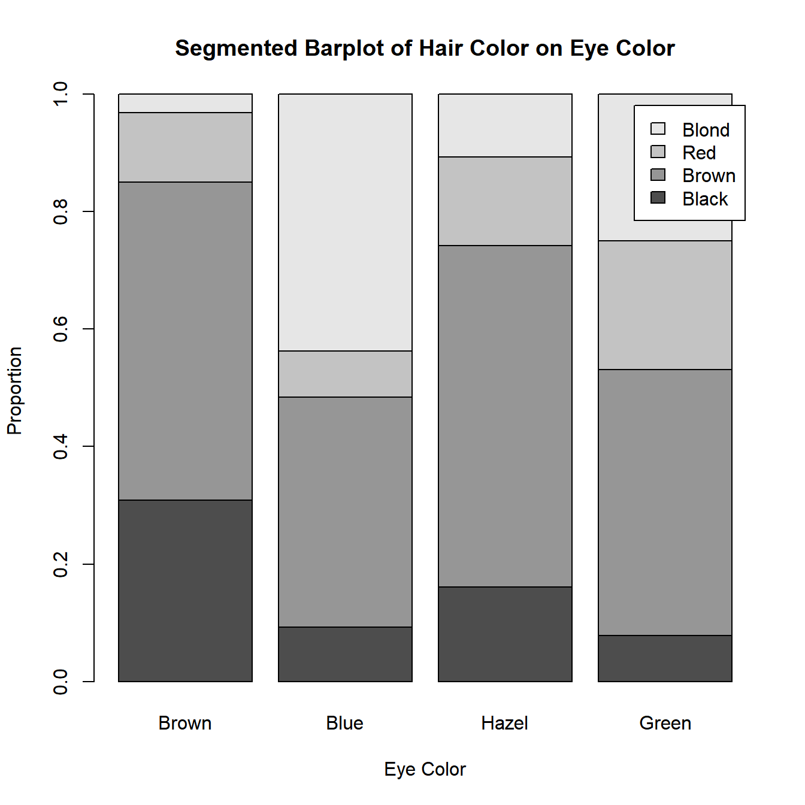

AP Stat Notation/Formula cheatsheet
Basic notation
Lists
Most of the time, you will see
For example, if
Then,
In regards to a data table or list of values,
So, for list
Adding on,
Summation (
You will also see the greek letter
If we want the sum of all numbers from 1 to 7, we would write it as,
We interpret this as,
Start from
Keep our evaluated expression to the side and get ready to add the other values to it, so
Now go the next numbers until we get to
When we get to the end of it (when we reach
Other notation
- Pronounced “x bar”
- Pronounced “p hat”
Other commonly used symbols
Descriptive Statistics (WIP)
These formulas are all included on the AP Cheatsheet included for your use during the AP test, quizzes, and tests in this class
Mean (Average)
Sample standard deviation
Linear regression
Estimate:
Linear regression passes through the mean:
*Note:
Correlation coefficient
Categorical Data Visualizations
Bar plots
Represent the number or proportion of each unique value. These numbers or proportions are represented with rectangular bars with heights proportional to the values that they represent. You can plot these vertically or horizontally (i.e. categories on the x-axis or categories on the y-axis)
Following data from this table:
Species <fct> | ||||
|---|---|---|---|---|
| setosa | ||||
| setosa | ||||
| virginica | ||||
| setosa | ||||
| virginica | ||||
| virginica | ||||
| versicolor | ||||
| versicolor | ||||
| virginica | ||||
| versicolor |
- Count up the number of values per category (make a frequency table). Note: This table is missing the total
iris_cat_tab <fct> | Freq <int> | |||
|---|---|---|---|---|
| setosa | 3 | |||
| versicolor | 3 | |||
| virginica | 4 |
- Plot the frequencies with them as the height of the bars
If needed (if you need proportions for the y-axis instead, calculate the relative frequency table for the frequency table first). Note: again, this one is missing the total
iris_cat_tab <fct> | Freq <dbl> | |||
|---|---|---|---|---|
| setosa | 0.3 | |||
| versicolor | 0.3 | |||
| virginica | 0.4 |
Stacked Bar Plots and Side-by-Side Bar Graphs
Stacked bar plots show two categorical variables, one on the x-axis/y-axis, and the other as the legend (colours). We will call the variable on the x-axis as the “groups” and the variable on the legend as the “categories.”
When constructing these bar plots, we first want to determine which variable goes where (your choice or given choice to you). Then you calculate relative frequencies per group
For example, here I have a two-way table detailing the hair and eye colour of some statistics students
Hair <fct> | Eye <fct> | Freq <dbl> | ||
|---|---|---|---|---|
| Black | Brown | 68 | ||
| Brown | Brown | 119 | ||
| Red | Brown | 26 | ||
| Blond | Brown | 7 | ||
| Black | Blue | 20 | ||
| Brown | Blue | 84 | ||
| Red | Blue | 17 | ||
| Blond | Blue | 94 | ||
| Black | Hazel | 15 | ||
| Brown | Hazel | 54 |
So if I want eye colour to be my groups, I would calculate the relative frequencies by column (use the total of the column and divide the whole column by it), so each group/column will add up to 1.
Hair <fct> | Eye <fct> | Freq <dbl> | ||
|---|---|---|---|---|
| Black | Brown | 0.30909091 | ||
| Brown | Brown | 0.54090909 | ||
| Red | Brown | 0.11818182 | ||
| Blond | Brown | 0.03181818 | ||
| Black | Blue | 0.09302326 | ||
| Brown | Blue | 0.39069767 | ||
| Red | Blue | 0.07906977 | ||
| Blond | Blue | 0.43720930 | ||
| Black | Hazel | 0.16129032 | ||
| Brown | Hazel | 0.58064516 |
These numbers will be my bar heights. So for the bar(s) representing brown eyes:
black hair will be .3091
brown hair will be .5409
red hair will be 0.1182
blond hair will be 0.0318

Here’s the corresponding side-by-side bar plot. Note that the heights of the bars are the same as the segmented bar graph.
On the other hand, if I want my eye colour to be my groups, I would calculate the relative frequencies by row (use the total of the row and divide the whole row by it), so each group/row will add up to 1.
Hair <fct> | Eye <fct> | Freq <dbl> | ||
|---|---|---|---|---|
| Black | Brown | 0.62962963 | ||
| Brown | Brown | 0.41608392 | ||
| Red | Brown | 0.36619718 | ||
| Blond | Brown | 0.05511811 | ||
| Black | Blue | 0.18518519 | ||
| Brown | Blue | 0.29370629 | ||
| Red | Blue | 0.23943662 | ||
| Blond | Blue | 0.74015748 | ||
| Black | Hazel | 0.13888889 | ||
| Brown | Hazel | 0.18881119 |
These numbers will be my bar heights. So for the bar(s) representing black hair:
brown eyes will be 0.6296296
blue eyes will be 0.1851852
hazel eyes will be 0.1388889
green eyes will be 0.0462963
Mosaic Plots
Mosaic plots are the almost the same as stacked bar plots. The only difference is that the widths of the bars change according to the proportion of points in each group. In a mosaic plot, the x-axis will also measure the proportion of observations/data points within the groupings (i.e. the x-axis reflects the marginal distribution of the variable on the x-axis).
Following the same steps as the side-by-side and stacked bar charts to find the heights, we now add an additional step before plotting.
Find the widths of the bars by finding the marginal distriubtion of the variable on the x-axis (the groups)
- For each group, find the probability of having that trait. So for our previous example, we had this table:
Hair <fct> | Eye <fct> | Freq <dbl> | ||
|---|---|---|---|---|
| Black | Brown | 68 | ||
| Brown | Brown | 119 | ||
| Red | Brown | 26 | ||
| Blond | Brown | 7 | ||
| Black | Blue | 20 | ||
| Brown | Blue | 84 | ||
| Red | Blue | 17 | ||
| Blond | Blue | 94 | ||
| Black | Hazel | 15 | ||
| Brown | Hazel | 54 |
Using our eye colours as the groups (vertical bars), we will find:
When we plot our mosaic plot, we do the same thing, except now, we have our bars differ in widths according to the numbers that we just calculated.

Quantative Data Visualizations
Dot Plots
Dot plots are for discrete quantitative variables only, and they are only useful in situations when you have a small range of number so that you can actually see how the data distribution varies across values.
Dot plots are simple, you draw a number line and then plot points above the number for each of the number that you see in the data.
Take this data for example:
Number.of.Holligans.in.the.Hallway <dbl> | |||
|---|---|---|---|
| 4 | |||
| 5 | |||
| 8 | |||
| 5 | |||
| 5 | |||
| 8 | |||
| 6 | |||
| 2 | |||
| 4 | |||
| 4 |
Now count up each value to figure out how many dots you need at each value on the number line then plot your graph
X <chr> | n <int> | |||
|---|---|---|---|---|
| 1 | 1 | |||
| 2 | 1 | |||
| 4 | 5 | |||
| 5 | 4 | |||
| 6 | 5 | |||
| 7 | 1 | |||
| 8 | 2 | |||
| 9 | 1 |
Bin width defaults to 1/30 of the range of the data. Pick better value with `binwidth`.
Stemplots
Using this data as an example, a stem plot looks like this:
x <dbl> | ||||
|---|---|---|---|---|
| 36 | ||||
| 44 | ||||
| 89 | ||||
| 52 | ||||
| 53 | ||||
| 93 | ||||
| 62 | ||||
| 18 | ||||
| 33 | ||||
| 39 |
A stem plot looks like this:
1 | 2: represents 12
leaf unit: 1
n: 20
0 | 1
1 | 8
2 |
3 | 36689
4 | 4
5 | 2339
6 | 0228
7 |
8 | 19
9 | 35In a stem plot, you need to determine a common “stem” of all the numbers that you’re plotting. So if you have integer numbers from 10 to 200, your stems will be everything from the tens and so on, so you’ll have stems from 1-20. Once you take the stems, you just write the “leaves” next to the stem that they belong.
Note that you also have to add a key to show what a stem + leaf means. The stem and leaves give no information on the decimals in the data, so as you see above, you need to give an example like (as shown in the example stemplot):
Key: 1|2 = 12
Here’s another example (sorted for convenience)
x <dbl> | ||||
|---|---|---|---|---|
| 3.9 | ||||
| 4.8 | ||||
| 4.0 | ||||
| 4.3 | ||||
| 4.4 | ||||
| 3.3 | ||||
| 5.8 | ||||
| 5.2 | ||||
| 3.9 | ||||
| 6.3 |
1 | 2: represents 1.2
leaf unit: 0.1
n: 50
3 | 3
3 | 579999
4 | 00334
4 | 556677788899
5 | 00112233444
5 | 667888999
6 | 234
6 | 5
7 | 12Boxplots
Also known as a box-and-whisker plot
Boxplots are primarily made of the five number summary of the data. The five number summary is made up of the:
Minimum (min)
First Quartile (
Median
Third Quartile (
Maximum (max)
To make a simple boxplot, you use the first quartile, median, and third quartile to make the “box” and then use the minimum and maximum to make the “whiskers.”
For this simple list of numbers:
x <dbl> | ||||
|---|---|---|---|---|
| 1 | ||||
| 2 | ||||
| 3 | ||||
| 4 | ||||
| 5 | ||||
| 6 | ||||
| 7 |
Our five number summary is:
Min. 1st Qu. Median 3rd Qu. Max.
1 2 4 6 7 As detailed above, our box plot then looks like:
The last detail is that we can calculate outliers using the 1.5 IQR rule and show them on the boxplot. For either direction (left or right), if we see outliers in that direction, we only extend the whisker to the smallest and/or largest point that is not an outlier. Then we plot any outliers as individual points.
Look at this example data:
x <dbl> | ||||
|---|---|---|---|---|
| 12 | ||||
| 6 | ||||
| 5 | ||||
| 5 | ||||
| 3 | ||||
| 3 | ||||
| 2 | ||||
| 2 | ||||
| 1 | ||||
| 1 |
Five number summary:
Min. 1st Qu. Median 3rd Qu. Max.
-12 -5 -3 0 12 Our numbers calculated by the 1.5 IQR rule are:
[1] -12.5 7.5So our 12 is an outlier. which means we draw our right whisker to 6 and plot the 12 individually on the number line. Like so:

Histograms
A histogram is similar to a bar plot, except that histograms are made for quantitative data and bars are continuous in the sense that there is no gap between bars. To make a histogram, select an appropriate equal intervals that make it so that you don’t have too many bars and that you don’t have too few bars. Your goal with histograms, as with many other visualizations, is to be able to see the shape and characteristics of the distribution in question. If you have too many bars or too few bars, you won’t be able to see much important information (especially think of situations when you have many data points with very precise decimal measurements).
Decide on your intervals (e.g. by 5’s, by 10’s, by 100’s)
Within your intervals, count up the number of observations that belong in that “bin”. When you do so, count up observations so that you count the left end inclusive and the right end inclusive. So if you did intervals of 5, you would do something like counting up points
Plot your bars.
Example:
Consider this example data set:
Our data has this set of summary statistics:
x
Min. :1.522
1st Qu.:1.912
Median :2.022
Mean :2.110
3rd Qu.:2.224
Max. :2.704 With this knowledge, let’s make our 7 “bins”, so let’s do these by every 0.2, starting at 1.5 to 2.9. This will be something that you build by intuition.
Now, count up our values:
[1.5,1.7) [1.7,1.9) [1.9,2.1) [2.1,2.3) [2.3,2.5) [2.5,2.7) [2.7,2.9]
1 4 6 5 1 2 1 Now, we just put it together. For each bin, we have a bar and the bars’ heights correspond to the number of individuals in each bin.

Again, just like bar graphs, we can instead do the relative frequencies (this is what you’ll see most of the time!!!)
[1.5,1.7) [1.7,1.9) [1.9,2.1) [2.1,2.3) [2.3,2.5) [2.5,2.7) [2.7,2.9]
0.05 0.20 0.30 0.25 0.05 0.10 0.05 
When you have a histogram like this, keep in mind that the bars always add up to 1 (or 100%).